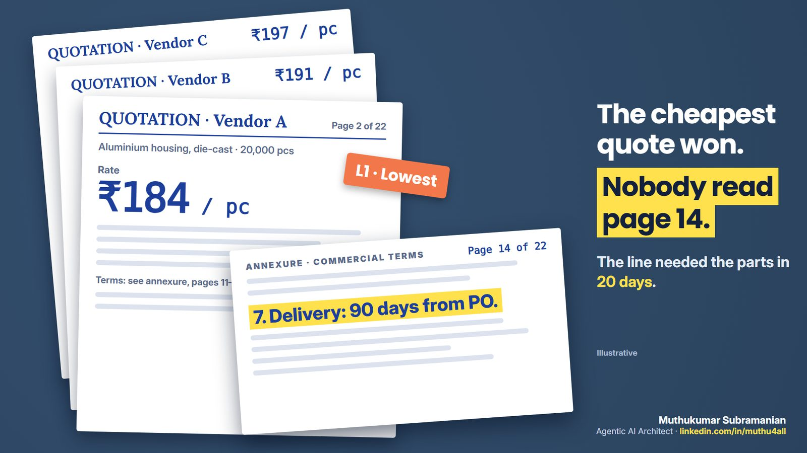
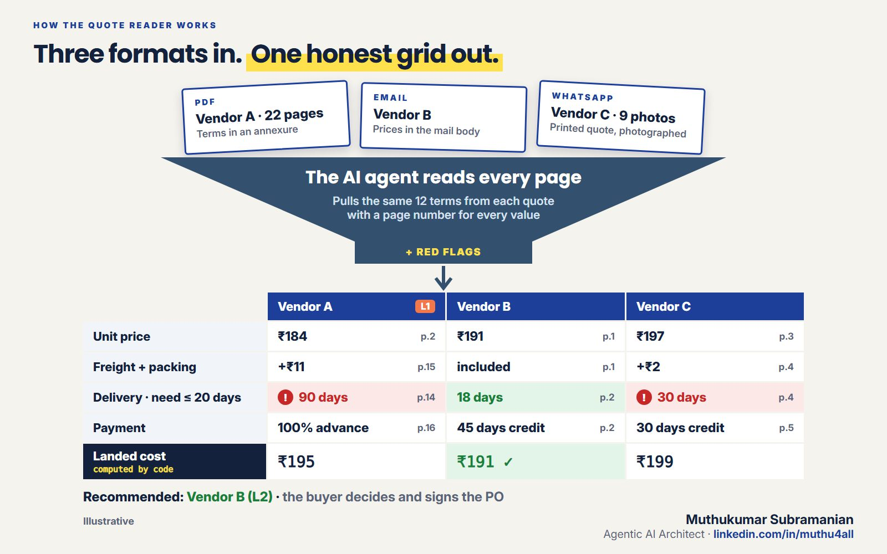
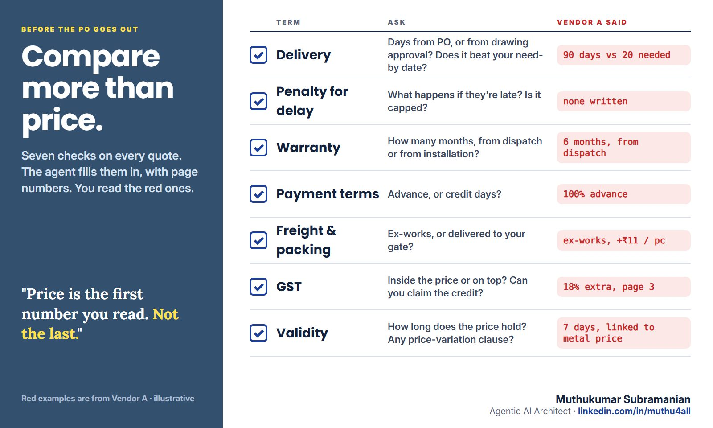
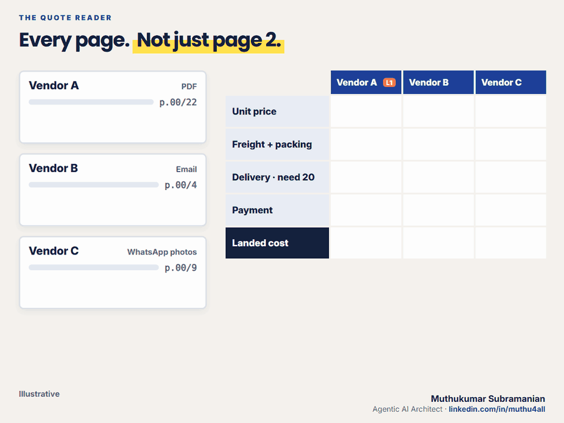

The Cheapest Quote Won. Nobody Read Page 14.
By Muthukumar Subramanian · Agentic AI Architect

Day 21, 10:15 AM, at an auto-parts unit in Hosur. The assembly line goes quiet.
Senthil, the plant head, walks over to find out why. The aluminium housings haven't arrived. They were ordered three weeks ago from the cheapest of three vendors, ₹184 a piece against ₹191 and ₹197. The purchase team did what purchase teams are taught to do. They picked L1, the lowest quote.
Someone digs out the vendor's quotation. It's 22 pages. The price is on page 2. Page 14, under "Commercial terms", says this:
"Delivery: 90 days from PO."
The line needed the parts in 20. (The unit, Senthil, the vendors and every number here are illustrative. The page 14 isn't. Most buyers have met one.)
Nobody was careless. Three quotes, 61 pages between them, a requirement due by Friday. People read the price and the totals, because that's what fits in a day. The rest gets "we'll check it later".
So the line stops, and it doesn't stop alone. The two-wheeler maker downstream is waiting for those housings too. Overtime gets booked, a premium supplier gets begged, and the vendor rating that took five years to build takes a hit in one week.
The cheapest quote is just the first number you read.
Why this keeps happening
Comparing vendor quotes is slow and fiddly work:
→ Every vendor uses their own format. One sends a 22-page PDF, one sends prices in the body of an email, one sends a photo of a printed quote on WhatsApp.
→ The terms that matter are buried: delivery in a terms annexure, freight in a footnote, payment terms on the last page.
→ Units don't match. Per piece, per kg, per lot of 500. Ex-works Coimbatore or delivered to your gate.
→ The spreadsheet that's meant to compare them has one column that everyone fills in: price.
Even public procurement, where L1 is close to sacred, isn't meant to work on sticker price alone. In government tenders L1 is the lowest evaluated bid, and the tender says what gets added before ranking. India's Manual for Procurement of Goods talks openly about total cost of ownership and life-cycle cost. Private buyers are freer still. We just don't have the time to read everything.
That's exactly the gap an AI agent fills well.
The solution: let the agent read, let code count, let a person decide
Here's the setup I'd build for a plant like Senthil's:
- Every quote goes into one inbox: PDF, email, WhatsApp photo, scanned fax. The agent reads all of it, every page. Today's models handle a 22-page PDF or a photographed page well; for scans, add an OCR step such as AWS Textract or Google Document AI.
- It pulls out the same twelve terms from each quote: unit price, quantity, freight, packing, GST, delivery, penalty for late delivery, warranty, payment terms, validity, price-variation clause, and anything unusual.
- Each value comes with its page number. "Delivery: 90 days from PO · page 14". The buyer can check any cell in one click.
- It compares every term with the buyer's requirement sheet (need-by date, payment policy, minimum warranty) and flags the red ones.
- Plain code, not the AI, computes the total landed cost and the delivery date for each vendor. Arithmetic is for code.
- The agent drafts clarification emails for anything missing ("Is freight included?"). The buyer sends them.
- The buyer decides and signs the PO. The agent's job is to make sure nobody signs without seeing page 14.

In Senthil's case, the grid would have shown this in one glance:
→ Vendor A: ₹184 a piece, ex-works. Add freight and packing and it's ₹195 landed. 100% advance. Delivery 90 days. Red.
→ Vendor B: ₹191 a piece, delivered to the gate. ₹191 landed. 45 days' credit. Delivery 18 days.
→ Vendor C: ₹197 a piece. ₹199 landed. Delivery 30 days. Red.
The cheapest quote wasn't even the cheapest. And it would have stopped the line.
I wrote in October about "Let AI Talk. Let Code Count." This is the same idea in a purchase office. Let the AI read. Let code count. Let people sign.
What to compare, every time
If you take one thing from this post, take this list: seven terms that aren't the price.

On GST: if you can claim the input credit, the tax is mostly a cash-flow question. If you can't, it's a cost, and it belongs in the landed number. Check with your CA which applies to you.
Here's the whole thing in motion.

The hard parts
The agent will miss things. Not often, if you set it up well, but it will. That's why every value carries a page number, and why a person signs. Treat it as a very fast first reader, not the last one.
"As per our standard terms and conditions" is the worst sentence in procurement. It points to a document nobody attached. The agent should flag it every time and ask for the document, not guess.
Phone negotiations don't leave a trail. If the vendor agreed 30 days' delivery on a call, the agent can't see it. Make "confirm it in writing" a habit.
Quotes are confidential. Vendors trust you with their prices. Don't paste them into a free consumer chatbot; use a business plan or an internal deployment where your data isn't used for training, and check the terms.
And the L1 habit is cultural, not technical. Some purchase teams get questioned every time they don't pick the lowest price. The grid helps here too: "We chose B because A's landed cost was higher and its delivery would have stopped the line" is a much easier conversation with your MD or auditor than "we had a feeling".
A forward deployed engineer (FDE), an engineer who works inside the customer's team on their real systems, is the right person to set this up. One week on the purchase desk, reading last year's quotes with the buyers, building the requirement sheet and the twelve terms. The title's still settling. The job is very real.
The opportunity
→ For SME owners and plant heads: start with your next three-quote purchase. Have the agent build the grid alongside your buyer and compare. If it finds one buried term, it's paid for itself.
→ For procurement teams: your experience is the requirement sheet. "We never accept more than 30 days' delivery on line parts" is a rule the agent can check on every quote, forever.
→ For IT services firms and startups: quote comparison for manufacturing clusters such as Hosur, Coimbatore, Pune and Rajkot. Thousands of small units, the same pain, very little software. Price it per purchase, not per seat.
→ For ERP and accounting partners: a quote reader that writes the comparison straight into the purchase order workflow, with the page references attached.
Tag the buyer in your company who actually reads page 14.
Your turn 👇
Would you let an AI agent recommend L2 over L1 if the grid showed you why? Yes or no.